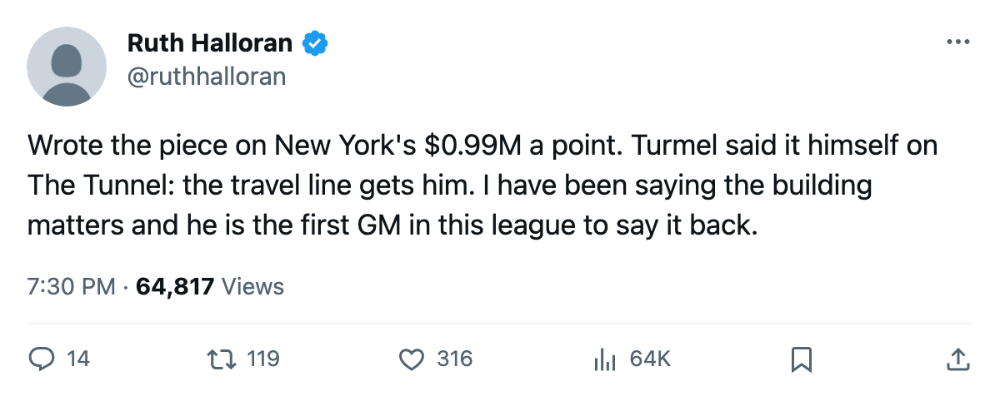
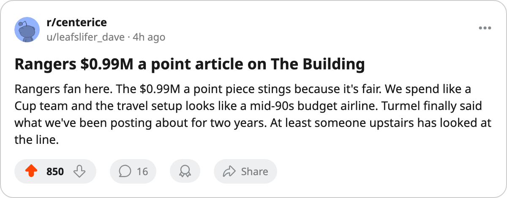

The worst price in the league: New York costs $0.99M per point
Second-highest payroll, lowest points per dollar, and a practice rink at level zero
 Ruth HalloranBusiness of hockey · The Building
Ruth HalloranBusiness of hockey · The BuildingThe  New York Rangers cost $0.99M per point this season, the highest cost per point of any club in the league. Their payroll of $78.14M is second only to
New York Rangers cost $0.99M per point this season, the highest cost per point of any club in the league. Their payroll of $78.14M is second only to  Detroit Red Wings, and their 79 points sit 16th. Detroit pays $0.95M per point on $80.89M and has 85 points.
Detroit Red Wings, and their 79 points sit 16th. Detroit pays $0.95M per point on $80.89M and has 85 points.  Philadelphia Flyers pays $0.94M per point on $66.73M and has 71. The three clubs above $66M in payroll carry the three worst points-per-dollar rates in the league.
Philadelphia Flyers pays $0.94M per point on $66.73M and has 71. The three clubs above $66M in payroll carry the three worst points-per-dollar rates in the league.
Turmel named the road, and the building file agrees
Garrett Turmel spoke about travel in his Tunnel interview on 2005-03-19: "The travel line is the one that gets me. You fly to Vancouver on bad sleep and you play a team that's rested, and nobody in the paper writes about the flight." He said he has looked at the line and keeps looking. "Whether it's the number I move this summer, we'll see. That's a different check than a forward."
New York's travel sits at level 1, a minus-4 modifier. Their practice rink is at level 0, a minus-6. Level 5 is par. The equipment room at 2 (-3) and the workout at 2 (-3) complete a live sum of minus-16. Two of the four rooms that move a rating are at or near the floor.
New York is 13-25 away and 22-16 at home. The travel penalty applies on the road, the practice penalty at home. Both are near the bottom.
The gate at $80 does not cover it
New York charges $80 a seat and draws 14713.  New Jersey Devils charges $80 and draws 17261. New Jersey's revenue is $88.41M; New York's is $73.67M. The Devils spend $45.15M on payroll and book $40.06M in profit. New York carries $78.14M against $73.67M in revenue and books no profit.
New Jersey Devils charges $80 and draws 17261. New Jersey's revenue is $88.41M; New York's is $73.67M. The Devils spend $45.15M on payroll and book $40.06M in profit. New York carries $78.14M against $73.67M in revenue and books no profit.
Only New York and Detroit carry payrolls that exceed revenue. Detroit spends $80.89M against $78.56M. Every other club clears.
| Club | Payroll | Points | Per point | Live sum | On the ice | Profit |
|---|---|---|---|---|---|---|
| Detroit Red Wings | $80.89M | 85 | $0.95M | -13 | -2.63 | n/a |
| New York Rangers | $78.14M | 79 | $0.99M | -16 | -0.90 | n/a |
| Philadelphia Flyers | $66.73M | 71 | $0.94M | -15 | -1.88 | $3.38M |
 New York Islanders New York Islanders | $52.47M | 76 | $0.69M | -13 | -3.64 | $10.46M |
| New Jersey Devils | $45.15M | 103 | $0.44M | -10 | -1.82 | $40.06M |
 Vancouver Canucks Vancouver Canucks | $35.16M | 95 | $0.37M | -16 | -1.81 | $34.18M |
 Edmonton Oilers Edmonton Oilers | $36.81M | 96 | $0.38M | -16 | -2.74 | $30.69M |
A bad building does not pick the same victim
Seven clubs share a live sum of minus-16: New York,  Atlanta Thrashers,
Atlanta Thrashers,  Boston Bruins,
Boston Bruins,  Buffalo Sabres, Edmonton Oilers,
Buffalo Sabres, Edmonton Oilers,  Phoenix Coyotes and Vancouver Canucks. The rooms are equally poor on paper. The actual facilities impact on each roster, read from the rating model, differs sharply. New York's is minus-0.90, the 4th-lightest in the league. Edmonton Oilers runs minus-2.74 with the same live sum. Vancouver Canucks sits at minus-1.81.
Phoenix Coyotes and Vancouver Canucks. The rooms are equally poor on paper. The actual facilities impact on each roster, read from the rating model, differs sharply. New York's is minus-0.90, the 4th-lightest in the league. Edmonton Oilers runs minus-2.74 with the same live sum. Vancouver Canucks sits at minus-1.81.
New York Islanders has a live sum of minus-13, better than New York's minus-16, but their on-the-ice term is minus-3.64, the heaviest in the league.  Mighty Ducks of Anaheim carries minus-3.61 on a live sum of minus-18. The rooms touch agility, acceleration, balance, shot accuracy, strength, checking, endurance. Different rosters weight those attributes differently. A minus-6 practice rink hurts a club with depth on its fourth line less than it hurts a club built around one scoring winger.
Mighty Ducks of Anaheim carries minus-3.61 on a live sum of minus-18. The rooms touch agility, acceleration, balance, shot accuracy, strength, checking, endurance. Different rosters weight those attributes differently. A minus-6 practice rink hurts a club with depth on its fourth line less than it hurts a club built around one scoring winger.
Turmel: "You can put $78.14M on the roster and still leave the room a man walks into every morning at the bottom of the league's ledger."
The discipline he asked for
Jan Kowalczyk asked Turmel what he would take from another club's model. Turmel named New Jersey first. He said the number: 103 points on $45.15M. What he wanted from them: "Not the payroll. The discipline."
The Rangers sit at 79 points on $78.14M, drawing 14713 at $80 a seat, with a practice rink at the floor and a travel budget at level 1. Turmel has looked at that line. He said he keeps looking.

